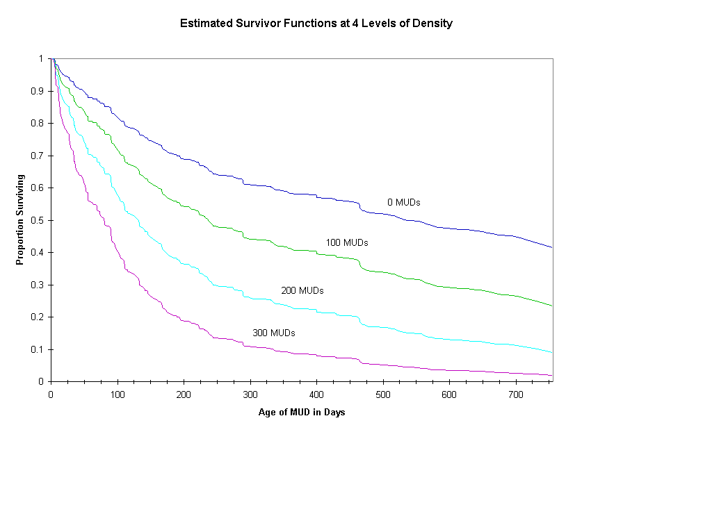

Competition and MUD Failures
Alan Schwartz
Department of Psychology
University of California, Berkeley
alansz@pennmush.tinymush.org
ABSTRACT
The population of MUDs in existence changes over time as MUDs close and new MUDs are founded. Closings are usually attributed to factors endogenous to the MUDs, such as the abilities of administrators or the behavior of players; MUDs which do not adapt as they age face a higher risk of failure. Like any organization, however, MUDs are also subject to environmental pressures. One important aspect of the environment which may affect the population failure rates is the population density, the number of MUDs already in existence. MUD failure rates for a 2-year period are described. Failure rates increased with increasing population density at the time of the MUD's founding, but decreased with population density thereafter. No effects of type of MUD server were found. Some speculative explanations are offered.
INTRODUCTION
In the field of Organizational Behavior, the study of the dynamics of populations of organizations, rather than the behavior of individual organizations, has been termed "population ecology". Of interest are changes in the so-called vital rates of populations. The "founding rate" is the rate at which new organizations enter the population; the "failure rate" is the rate at which organizations leave the population. Seminal works by Hannan and Freeman (1989) and Hannan and Carroll (1992) have suggested that failure rates may be age-dependent and density-dependent. That is, newer organizations are more likely to failure than older organizations, and the density of the population (the number of organizations) affects the rates of organizational failure.
The effects of density are more complex. At the beginning of an organizational population, where there are few organizations, each new organization increases the legitimacy of the population, which in turn decreases the failure rate. As the number of organizations increases, however, competition between organizations begins to play an important role; as competition increases, failure rates increase. These two countervailing processes, legitimation and competition, eventually result in a fairly stable population density in a mature population.
MUD failures are often attributed to endogenous aspects of the MUD. Conventional wisdom has it that closings result from mismanagement, excessive resource use, failure to adapt to player desires, or boredom on the part of the MUD's administrators. While there certainly is truth to the conventional wisdom, population ecology suggests that the vital rates of populations of MUDs may be significantly affected by such factors as the number of other MUDs in existence, and the age of each MUD. Discovering the existence of such factors would give a picture of the larger processes which affect MUDs. In addition, many MUD administrators are unsure of the status of competition between MUDs: are MUDs really competing for players, sites, and other resources, or are there so many resources available that competition is relatively weak?
METHOD
DATA
Observations of MUD foundings and failures were generated from Scott Goehring's "Totally Unofficial List of Internet MUDs" for the period from November 1, 1991 to November 25, 1993 (Goehring, 1993). Goehring published 57 lists, at a rate of about one list per week until September 1992, and more sporadically thereafter. During this period, Goehring's list was the primary source of public information about MUD addresses. I was unable to locate archives of other MUD lists; accordingly, MUD population data after 1993 was not available.
The first and last appearance of each MUD listed as active in any MUD list was recorded. In some cases, MUDs failed to appear on a list despite appearing on the prior and following lists; such situations were assumed to be temporary down time of the MUD and were treated as if the MUD was still in the population during the period.
Some MUDs, of course, were still in existence at the end of the period of observation. MUDs for which closing dates are not available are referred to as "right-censored". Because it is not appropriate to ignore these MUDs, special techniques have been developed to analyze data which are right-censored (Cox & Oakes, 1984).
LIMITATIONS OF THE DATA
Certain limitations of working with archival data of this sort should be made clear. First, I assume that the date on which a MUD enters or leaves the MUD lists is a good estimate of when the MUD actually opened to the public or closed; that is, a MUD which disappears after the fourth MUD list is assumed to have closed some time between the dates of the fourth and fifth list. An alternative might be that MUDs entering or leaving the MUD lists has more to do with the list maintainer's free time; perhaps there was a lag in processing changes to the list. Discussion with Goehring suggests that this was not the case; as does the lack of complete regularity in list publication dates.
Secondly, I assume that list actually represents a good sample of the publicly-open MUDs that existed during the observation period. Not only do I assume that it contains information about a large proportion of the existent MUDs, but that any publicly-open MUDs which do not appear on the lists were omitted for essentially random reasons. There may well be bias in the sample: MUDs which were open for very short periods (e.g. less than two weeks) are unlikely to appear on the lists. Of course, such MUDs are probably of less interest. Because I would not be able to estimate the bias even if it did exist, I treat the lists as unbiased.
Third, as time progressed, the list was published less and less frequently. Accordingly, the resolution of the data decreases as time goes on, particularly near the end of the list's publication life. This results in greater variance in failure times for long-lived or late-founded MUDs, and makes finding effects of explanatory variables more difficult. Moreover, because data are unavailable after 1993, no claims are made about the degree to which these results will generalize to future time periods.
Finally, these data are relatively impoverished; the only information available about the individual MUDs was their server software. While the purpose of this paper is to draw the conclusions that are available from primarily exogenous variables, there is no doubt that information about the sizes (in players or objects) of the MUDs would enrich the analysis, and should be included in the collection of future population data.
ANALYSIS
A number of procedures are commonly applied to failure time data. The data can be summarized by a survivor function, the proportion of organizations surviving beyond t units of time. A related function, the hazard rate, gives the rate of failure after a given amount of time. The hazard rate is usually difficult to calculate; instead the cumulative hazard rate is often presented.[1] These functions are descriptive; the procedures used to compute them do not make any assumptions about the distribution of failure times.
In order to examine the effects of other population variables on the failure rates, some assumptions must be made. One common approach involves making assumptions about the underlying distributions of failure times. For example, one could assume that the hazard rate is constant across time, which implies that failure times are distributed exponentially. The constant hazard rate can be a function of the explanatory variables.
But hazard rates may not be constant across time. Alternative distributions, such as the Weibull distribution,[2] permit the possibility of time-varying hazard rates, but the selection of an appropriate distribution is often a highly subjective matter.
Another possible approach, the Cox model, assumes that the actual hazard rate is the product of a function of the explanatory variables and a baseline hazard rate estimated from the data. That is, population variables cause the hazard rate to be scaled up or down:
hazard(t,x) = exp(Bx) * basehazard(time)
survivor(t,x) = basesurvivor(time) ^ exp(Bx)
Because the baseline hazard rate is directly estimated, no assumptions need be made about the distribution of failure times.
The approaches above assume an underlying continuous time axis. But the data are decidedly not continuous; information is only available for those dates on which MUD lists were released. An alternative analysis uses only discrete time information and proceeds by performing a logit analysis to predict the probability of failure as a function of time and explanatory variables. An advantage of this procedure is the ease with which time-varying variables may be included in the analysis. (Allison, 1982). In this approach, the hazard rate is a logistic regression function:
hazard(t,x) = 1 / [ 1 + exp(-(t + Bx)) ]
survivor(t,x) = exp(-(1 / [ 1 + exp(-(t + Bx)) ]))
In the current study, MUD failure rates were analyzed using the TDA 5.3 software package (Rohwer, 1993), which uses the methods of maximum likelihood or partial likelihood to fit models. Because methods for analyzing founding rates are more complex, only failure rates are analyzed in this paper.
RESULTS
DESCRIPTION OF MUD LIFETIMES
During the period from November 1, 1991 to November 25, 1993, the number of public MUDs more than doubled, from 105 MUDs to 232 MUDs. Figure 1 shows the MUD population trajectory. Two notable features of this graph stand out. First, there were periods of both growth and decline throughout the history of the population. Second, the population grew fairly steadily until June 1993, and then grew much more quickly thereafter.
![[ Figure 1 Here]](schwartz2.gif)
Figure 1: MUD Population Trajectory.
Most organizational ecology analyses have focused on mature populations which have reached their "carrying capacity", a maximal density around which the population hovers, often declining slightly. It is clear that MUDs during this period had not reached their carrying capacity; the population maintained a youthful vitality of increasing growth.
While the population grew, however, individual MUDs certainly closed and left the population. Figure 2 shows the proportion of previously surviving MUDs which closed in each period. Again, it is clear the proportion of closings in each period varied greatly from period to period. The figure, however, suggests that the average proportion of closings increased over time. Proportions are independent of the population size, but it appears that as the population grew larger, the proportion of that population which closed also increased.
![[ Figure 2 Here]](schwartz3.gif)
Figure 2: Proportion of MUD closings by date
SURVIVAL AND HAZARD FUNCTIONS
Figure 3 plots the observed survivor function and cumulative hazard rate for MUDs during the two years. The survivor function shows the proportion of the population still alive after a given number of days. It has the typical shape, decreasing over time at a decreasing rate. The related cumulative hazard rate is curvilinear, another argument that the hazard rate in the population is not constant over time.
![[ Figure 3 Here]](schwartz4.gif)
Figure 3: Observed Survivor Function and Cumulative Hazard Rate
EFFECTS OF DENSITY AND SERVER TYPE
What might account for the shape of the MUD population survivor function? Some questions suggest themselves:
- Does the population density when the MUD was opened significantly increase failure rate? What about the density during the MUD's lifetime?
- Are there differences in survival functions between different types of MUD servers? If so, does the number of MUDs using a given server type affect the survival chances of a MUD using that server?
Effect Of Population Density At Founding
Model 1 of table 1 presents the results of fitting a Cox model to the failure times, with the population density at the time the MUD was opened entered as a covariate. The effect of density on chance of failure was significantly positive; the more other MUDs in existence when a MUD was opened, the more likely it is that the MUD will fail. Figure 4 illustrates the effect of density on the survivor function in the Cox model; the curves are the estimated survivor functions for population sizes of 0, 100, 200, and 300 MUDs. As the number of MUDs in the population at opening increases, the proportion surviving decreases, and the rate of decrease becomes more pronounced. Figure 5 shows the corresponding cumulative hazard functions at the same population sizes.
Table 1: Cox Models of Failure Rate
Independent Model 1 Model 2
Variables
Density 0.0050* 0.0059*
at founding (0.0016) (0.0019)
Tiny-type -0.0209
server (0.1324)
Density -0.0025
w/in server (0.0029)
at founding
Log-likelihood -2032.90 -2032.51
N 595 595
Numbers in parentheses are standard errors.
* = p < .01

Figure 4: Estimated Survivor Function (Cox Model) at varying levels of density at time of MUD founding
![[ Figure 5 Here]](schwartz6.gif)
Figure 5: Estimated Cumulative Hazard Rate (Cox Model) at varying levels of density at time of MUD founding
Effects Of Server Type And Within-Server Density
Early comparisons of survivor functions among different types of MUD servers using the SAS LIFETEST procedure revealed no effects of server type, but some of the servers in the population have very few observations; as a result, the power of the analysis was quite low. In order to increase the power, a dummy variable was constructed to reflect whether the MUD's server was a descendant of TinyMUD. Table 2 shows the server types in the population, classified by this variable. Model 3 of Table 1 shows the Cox model estimated with covariates including this dummy variable and the number of MUDs in the population using the same server. Neither of the coefficients associate with these variables were significant.[3]
Table 2: Types of Servers
Classified as "Non-Tiny" Classified as "Tiny"
Aber Mage
BSX Moo
Cool Talker
DGD TeenyMUD
Diku Muck
DUM TinyMUD
Haven MUSE
LP MUSH
Mare
MUG
Phoenix
Unter
Uri
Yamud
"Unknown"
Population Density As A Time-Varying Covariate
Population density varies over the life of a MUD. While Cox models can evaluate the effects of time-varying covariates, the procedure is inelegant, particularly with non-categorical covariates. The logit model, on the other hand, can easily incorporate the effects of such covariates. Accordingly, a logit model of failure rate was also fit to the data. Model 3 in Table 3 presents the coefficients and standard errors associated with the effects of density at founding, and density as a time-varying covariate. Again, density at founding has a significantly positive coefficient. Time-varying density has a significantly negative effect, however; as time goes on, larger populations are associated with reduced failure rates.
Table 3: Logit Models of Failure Rate
Independent Model 3 Model 4
Variables
Density 0.0123* 0.0116*
at founding (0.0021) (0.0022)
Density -0.0018* -0.0187*
(time-varying) (0.0020) (0.0038)
MUD age 0.0032*
(0.0006)
Intercept -4.5854 -3.7985
(0.2243) (0.2770)
Log-likelihood -1492.87 -1479.10
N 9011 9011
Numbers in parentheses are standard errors.
* = p < .01
Model 4 in Table 3 also includes the effect of the age of the MUD (in days) on its failure. Older MUDs were less likely to fail than younger MUDs. This "liability of newness" is a common finding in organizational ecology.
DISCUSSION
DENSITY, RESOURCES, AND COMPETITION
An interesting picture emerges from these results. Population density when a MUD is founded has a detrimental effect on its lifespan, but increasing population density during its lifespan is beneficial. One interpretation of this result is that, at start-up, MUDs are competing for an important resource: player and administrator interest. The more competition in the population, the less likely it is that a new MUD will survive. When those who start new MUDs are often administrators of existing MUDs, the link is particularly obvious: the new MUD competes with the existing MUD for the administrator's time and energy.
Once players are interested, however, there are advantages to having many MUDs in the population. Many MUDs may mean many opportunities: a larger overall base of MUD players, more MUD administrators for help with problems, increased legitimacy of MUDs, etc.
LIABILITY OF NEWNESS
Most research with traditional organizations has shown a liability of newness; younger organizations were more likely to fail than older organizations. (Hannan & Freeman, 1989). One explanation for this phenomenon is that younger organizations have fewer resources to draw upon than older organizations; once their startup capital is exhausted, many fail to survive.
MUDs are unlike traditional organizations in this respect. As MUDs age, we think of them as tending to consume more resources rather than produce more resources. Nevertheless, the data indicate a liability of newness among MUDs independent of the effect of density at founding. How can this be explained?
While the data themselves offer no explanation, my own experience running a MUD leads me to believe that as MUDs age they do produce resources: devoted players who want the MUD to continue. These players may be crucial in helping the MUD acquire a new site or a new hard drive when it outgrows the resources of its current computer. They may encourage other players to play the MUD. They may assume administrative positions if the MUD's administrators burn out. This speculation could be tested if data on the number of active players was available for each MUD at each period; prospective event history research designs should include this variable.
CONCLUSIONS
Organizational ecology inherently offers little in the way of suggestions for MUD administrations. After all, ecological variables like population density are not under the control of administrators and offer no purchase for keeping a MUD from closing. But if competition at founding is an important dynamic in the population of MUDs, we may ask which MUDs start up successfully. Research on traditional organizations suggests that, at different times, generalist organizations (which appeal to a wide population) and specialist organizations (which appeal to a particular niche) may be particularly successful. MUD populations have always included both MUDs offering a variety of experiences to a diverse group of players (such as TinyTIM or LambdaMOO) and those targeting unique interests (such as Genocide, an LPmud with no monsters dedicated to player-killing). While the data presented here can not speak to these issues, the possibility of results which are strategically useful as well as scientifically interesting should not be dismissed out of hand.
Another interesting covariate might be whether the MUD experienced a change of host computer or extended down time. Changing sites and down time are often thought to be detrimental to a MUD; event history analysis of the sort presented here can verify or falsify that perception.
For those who study organizations, MUDs and other on-line organizations provide a unique challenge and a unique opportunity. To the degree to which they partake of the aspects of traditional organizations, they provide convenient populations to study. To the degree to which they they differ from traditional organizations, they provide interesting tests of theories of organizational behavior. As MUDs receive more and more application as organizational forms, the study of MUDs as organizations becomes increasingly relevant.
ENDNOTES
[1] The survivor function, G(t) is the proportion of failure times
which are greater than t. The cumulative hazard function, H(t),
is related to the survivor function by the equation:
H(t) = - log G(t)
The hazard rate is the first derivative of the H(t). As such, it
is usually not directly estimable from data without assumptions
about the parametric form of the survivor function.
[2] In all equations, t refers to time since the beginning of the
observation period, x is a vector of explanatory variables, and B is a
vector of coefficients estimated by the analysis.
Models with a Weibull distribution of failure times assume the
following survivor function and hazard rate:
survivor(t,x) = exp(-(t*Bx)^k)
hazard(t,x) = k * (Bx)^k * t^(k-1)
[3] It is possible that combining servers together into a single dummy
variable could confound the results. Another analysis was
undertaken using dummy variables to assess the effects of being
an LPmud, DikuMUD, or MUSH (the three largest populations) on
failure rate. None of these proved significant.
REFERENCES
Allison, Paul D. (1982). Discrete-Time Methods for the Analysis of Event Histories. In: Leinhardt, Samuel (ed.) Sociological Methodology, Vol 13. San Francisco: Fossey-Bass Publishers.
Cox, D. R. & Oakes, D. (1984). Analysis of Survival Data. London: Chapman and Hall.
Goehring, Scott. (1993) "The Totally Unofficial List of Internet MUDs", Vol. 1-6. Available from the author on request.
Hannan, Michael T. & Carroll, Glenn R. (1992). Dynamics of Organizational Populations. New York: Oxford University Press.
Hannan, Michael T. & Freeman, John. (1989). Organizational Ecology. Cambridge, Massachusetts: Harvard University Press.
Hannan, Michael T. & Freeman, John. (1977). The Population Ecology of Organizations. American Journal of Sociology, 82(5), 929-964.
Rohwer, Gotz. (1993). TDA (Version 5.3). Available at: ftp://ftp.selapo.vwl.uni-muenchen.de/pub/tda-rzoo
Tuma, Nancy B. & Hannan, Michael T. (1984). Social Dynamics: Models and Methods. New York: Academic Press.